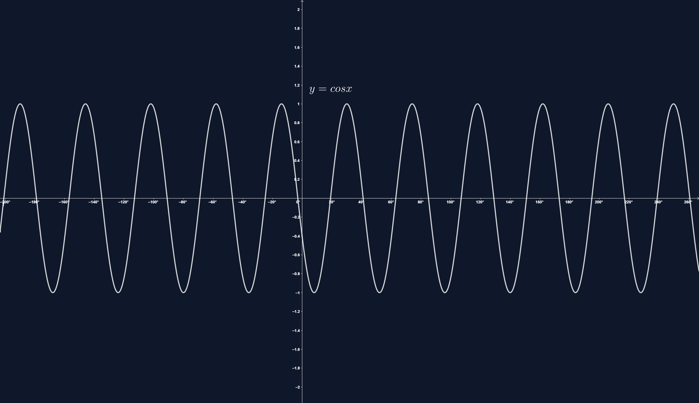

KOSINUSO FUNKCIJOS
Funkcijos y = f(x) = cos x:
- apibrėžimo sritis (laipsniais) yra intervalas (-∞;+∞);
- reikšmių sritis yra intervalas [-1; 1].
Funkcija y = f(x) = cos x yra periodinė. Jos mažiausias teigiamas periodas yra 360°:
cos x = cos(x + 360°)
Funkcija y = f(x) = cosx yra lyginė:
cos(x) = cos x.
cos 390° = cos(30° + 360°) = cos 30° = .
cos(-30°) = cos 30° =
